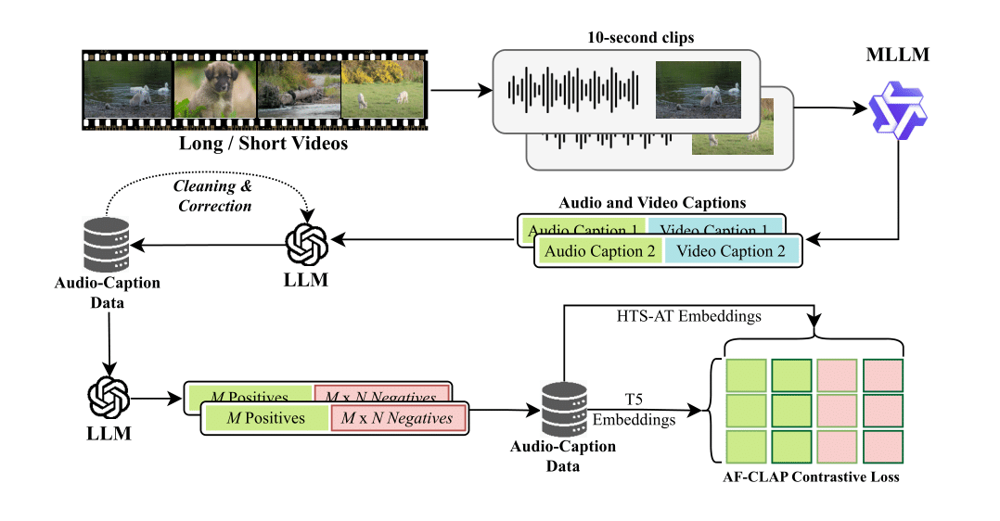
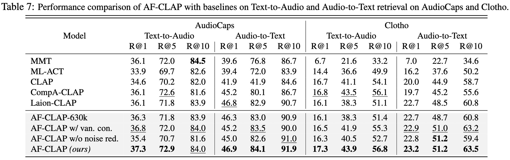
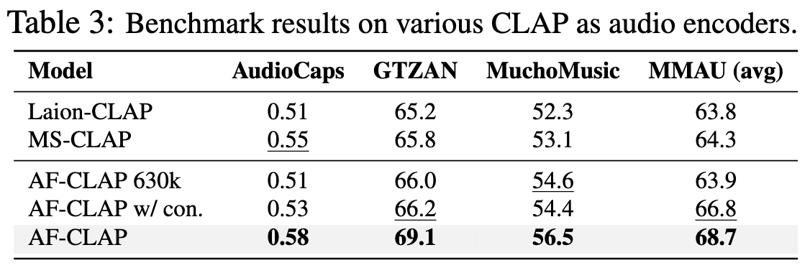
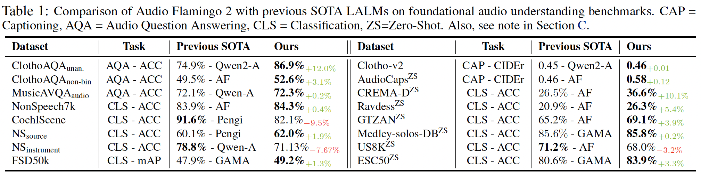
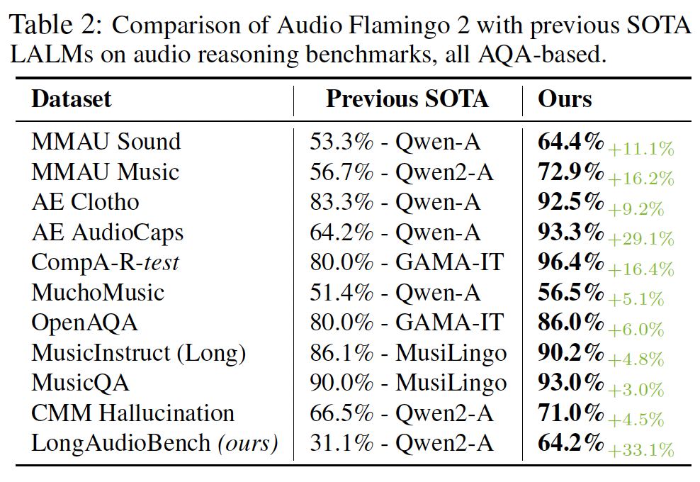

Audio Flamingo 2
An Audio-Language Model with Long-Audio Understanding
An Audio-Language Model with Long-Audio Understanding
Understanding and reasoning over non-speech sounds and music are crucial for both humans and AI agents to interact effectively with their environments. In this paper, we introduce \textbf{Audio Flamingo 2} (AF2), an Audio-Language Model (ALM) with advanced audio understanding and reasoning capabilities. AF2 leverages (i) a custom CLAP model, (ii) synthetic AQA data for fine-grained audio reasoning, and (iii) a multi-stage curriculum learning strategy. AF2 achieves state-of-the-art performance with only a 3B parameter small language model, surpassing large open-source and proprietary models across 20+ benchmarks. Next, for the first time, we extend audio understanding to long audio segments (30 secs - 5 mins) and propose \textbf{LongAudio}, a large and novel dataset for training ALMs on long audio captioning and question-answering tasks. Fine-tuning AF2 on LongAudio leads to exceptional performance on our proposed \textbf{LongAudioBench}, an expert annotated benchmark for evaluating ALMs on long audio understanding capabilities. We conduct extensive ablation studies to confirm the efficacy of our approach. All code and data will be open-sourced.
Understanding non-speech sounds, non-verbal speech, and music is essential for real-world applications such as detecting anomalies in industrial environments, recognizing emotional cues, and improving assistive technologies for the impaired. While Large Language Models (LLM) have demonstrated remarkable reasoning capabilities through language, extending these systems to comprehend audio is key to building intelligent systems capable of reasoning with contextual auditory cues. Verbal speech, inherently tied to language, has benefited significantly from LLM advancements. However, the potential to enhance perception and reasoning over non-verbal audio remains largely under-explored. In this paper, we introduce Audio Flamingo 2, an Audio-Language Model with advanced long-audio understanding and reasoning capabilities. Audio Flamingo 2 achieves the state-of-the-art performance across over 20 benchmarks, with only a 3B parameter small language model.
Representations in current CLAP models struggle with compositional reasoning and linguistic variations in captions. We introduce an improved version of CLAP called AF-CLAP, where we (1) construct a large-scale, high-quality training dataset, and (2) improve the training objective to for better representational quality and robustness. For each audio-caption pair, we construct linguistically varied captions with identical semantics and composition, and regard these as additional positives. We then generate caption variations with modified temporal or attribute compositions, and regard these as additional negatives. Our improved contrastive loss considers these additional positives and negatives, which leads to more human-aligned representation and better results (in both representation learning and audio understanding).
  Audio Flamingo 2 is trained with a 3-stage curriculum.
AF2 achieves state-of-the-art accuracy across various benchmarks, including ClothoAQA, AudioCaps, MMAU, and LongAudioBench. It outperforms proprietary models while being significantly smaller.
 AF2 is trained on the novel LongAudio dataset, consisting of 260K+ AQA pairs, and LongAudioBench, an expert-verified evaluation benchmark for long audio understanding.
| Audio | Question | Qwen2-Audio | GAMA | AudioFlamingo 2 |
|---|